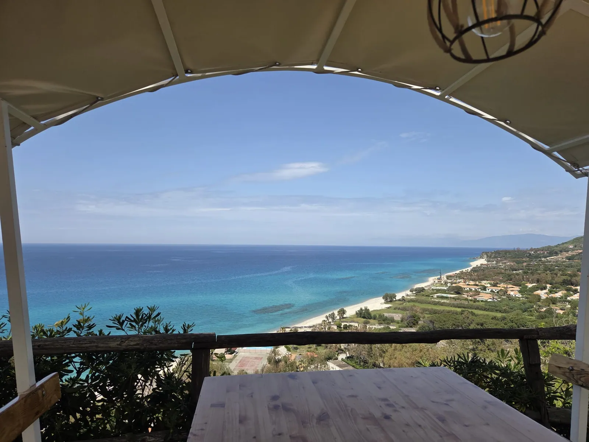

Falerna Marina · Riviera dei Tramonti
Playa, paseos junto al mar y la luz del atardecer que da nombre a la Riviera dei Tramonti.
Abrir en Google Maps↗
Falerna Marina · Calabria
Un apartamento tranquilo, pensado para disfrutar sin prisas del sur.
Descubrir el lugarCosta de Calabria
Ritmo italiano
Mare Lento es un lugar para respirar y descansar en Falerna Marina. Sus interiores luminosos, el balcón y las vistas de la costa crean una base sencilla para ir a la playa, descubrir Calabria y desconectar de verdad.
Ver la galería

Tu estancia
El apartamento dispone de aire acondicionado, dos dormitorios — uno con cama doble y otro con dos camas individuales — además de zona de estar y comedor, cocina compacta, baño con ducha y lavadora y balcón.
Confirmaremos los detalles del equipamiento y las condiciones de la estancia al recibir tu consulta.
Comprobar disponibilidadDisponibilidad
Elige las fechas y envía una consulta. El periodo solo se bloquea cuando el propietario la acepta.
Tu consulta llega al propietario. Las solicitudes pendientes no bloquean el calendario — solo lo hace su aceptación.
Consulta de estancia
Elige las fechasEnviar una consulta no confirma la estancia. Las fechas solo se bloquean cuando el propietario la acepta.
Galería
Interiores luminosos, detalles sencillos y una vista que permanece en el recuerdo.
Selecciona una foto para verla a tamaño completo.
Falerna Marina
Falerna Marina es una base tranquila para descubrir la costa del mar Tirreno. Empieza por la playa y la puesta de sol y reserva un día más largo para Pizzo, Tropea o Capo Vaticano.
Compartiremos la ubicación exacta y las indicaciones después de confirmar la estancia.


Playa, paseos junto al mar y la luz del atardecer que da nombre a la Riviera dei Tramonti.
Abrir en Google Maps↗Una histórica torre de vigilancia y un buen destino para un paseo corto o contemplar la puesta de sol.
Abrir en Google Maps↗Costa abierta, las lagunas de La Vota y amplios espacios apreciados por los amantes del viento y los deportes acuáticos.
Abrir en Google Maps↗Un pueblo costero con el Castello Murat, la iglesia de Piedigrotta excavada en la roca y el famoso tartufo di Pizzo.
Abrir en Google Maps↗Calles históricas, terrazas sobre el mar y Santa Maria dell’Isola en su promontorio rocoso.
Abrir en Google Maps↗Miradores, calas luminosas y aguas cristalinas en la Costa degli Dei — un destino perfecto para todo el día.
Abrir en Google Maps↗Una excursión a las islas Eolias requiere consultar previamente el operador, el tiempo y los horarios actualizados de navegación.
Abrir en Google Maps↗Mare Lento
Elige las fechas y cuéntanos qué necesitas — te responderemos con la disponibilidad.
Escribir por e-mail